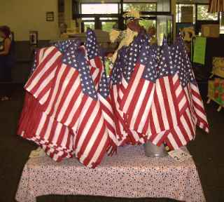
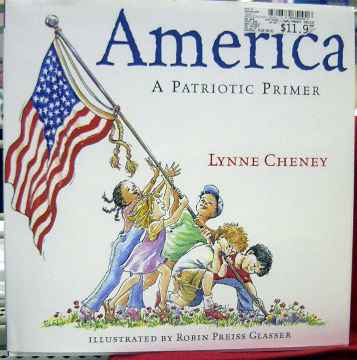

|
|
|||||||||||
|
Patriotic Merchandising of Nine-Eleven Tragedies By A.H. Jaffor Ullah 
Time surely passes by very fast. It seems as if 9/11 tragedy struck America not too long ago. At first when the Arab terrorists hijacked four commercial jetliners from four airports in eastern seaboards of America and commandeered the planes towards Twin Towers and Pentagon Building, most Americans had the faintest of idea how big the tragedy would turn up in just short few days. Since the western news media have an amazing appetite for finding new information on any subject, they dug deeper into 9/11 tragedies. Soon it was unearthed that 19 Arab terrorists belonging to al-Qaeda organization of Osama bin Laden had engineered this awful manmade disaster in the heartland of free world. When this news was confirmed, there was an outrage all over America to teach the nation that gave sanctuary to Osama bin Laden who was considered the mastermind behind this tragedy. President George W. Bush had to do something on the face of growing public demand for teaching the perpetrators of this heinous crime. It just took 6 weeks of rapid preparation for America to start aerial bombardment of Afghanistan, which was then controlled by Mullah Omar and his trusted lieutenants belonging to Taliban faction of Islamic fundamentalist political organization. While the Mullahs in Afghanistan and neighboring countries had thought that God Himself would intervene to thwart the war efforts of America, the devastating firepower of massive ‘Daisy Cutter’ bombs was soon found to be no match against Mullahs cumulative prayer and supplicatory exercises. The vestiges of Talibanism were removed in a short notice from Afghanistan. Thanks to George W. Bush’s policy “Either you are with us or you are with the terrorists,” which he delivered at the ‘Joint Session of Congress and the American People’ on September 20, 2001. Although, rest of the world heaved a deep sigh of relief at the prompt action of George W. Bush, both Osama bin Laden and Mullah Omar reportedly slipped away into a neighboring country where Islamists would give them a safe haven.
Now that the first anniversary of 9/11 tragedy is approaching fast on earthlings, a plethora of activities is planned in the West to remember the day of infamy in which thousands of New Yorkers simply vanished within hours after two hijacked planes rammed the Twin Towers that stood on the ground majestically. If someone now looks at the skyline of Manhattan from Brooklyn, Staten Island, or from the shores of New Jersey, he or she would sorely miss the familiar Twin Towers that was built in the late 1960s and made operational in the early 1970s. An intense debate is taking place in America centering on what to do with the precious land on which the World Trade Center used to stand for nearly three decades until September 11, 2001. Americans are very upset over the Arab terrorists’ activity on the Black Tuesday. The Twin Towers were considered an icon of America’s success. Similar to the Empire State Building located in the same island of Manhattan the Twin Towers were also considered a landmark and an epitome of success. America literally became the center of business world worldwide. Other nations were simply envious because of America’s rapid rise to stardom, metaphorically speaking of course. The Twin Tower building was located proximity to The Wall Street, which is home to NYSE and AMEX, the two citadels of financial power. Thus, when terrorists struck the World Trade Complex of buildings in the morning of September 11, 2001, Americans thought that their nation was under attack. Only other time that had happened was the attack on Pearl Harbor by Japanese on December 7, 1941. By perusing the history of WWII, we learn that America joined the Allied Force only after being attacked by the Japanese on that fateful day. This time also America went after the Talibans in Afghanistan only because they gave a safe haven to al-Qaeda financier Osama bin Laden. Now that September 11, 2002, is fast approaching on us and the Americans would remember the day’s event in somber mood along side with the rest of the world, the merchandiser of America is taking the full advantage of it. Let me tell you what I found just the other day visiting my local Wal-Mart store.  Mrs. Lynne Cheney, wife of Vice President Dick Cheney wrote this patriotic primer
For those of you who do not know what Wal-Mart is, here is this primer.
In America, many discount stores sell an entire slue of merchandise.
These stores are dubbed discount merchandiser because they sell things that we
need for our everyday life at a discount price. The king of discount
merchandiser was K-Mart. However, when a small discount merchandiser
from a rural Arkansas by the name Wal-Mart started their business, they made a
huge success. I first encountered a Wal-Mart store in 1985 when I moved
to New Orleans area from Urbana, Illinois. Even though the store carries
myriad foreign manufactured goods mostly from China, they tout often that they
only sell American made merchandise. During the Persian Gulf War time in
1991, I used to see the Wal-Mart stores brazenly decorate their stores with
American flags and posting messages everywhere about their unfailing support
for Operation Desert Storm, a euphemism for War against Saddam’s army.
There must be hundreds of these over patriotic Wal-Mart stores if not
thousands all across America. In fact, a visit to any of these Wal-Mart
stores could be quite an experience for someone who is visiting America for
the very first time. For shopping, Wal-Mart could be considered a
microcosm for the entire America.
A month before 9/11 anniversary would start the Wal-Mart stores all over America started to stock up on items related to this anniversary date. First, I noticed that as one would enter the front gate, a kiosk was set to display many items including propaganda-type books written by many faceless writers. Of course, one would see many flags of different sizes for sale. I know many immigrant families who are displaying the flags bearing thirteen stripes and fifty stars attaching these to their car’s windshield, outside their apartment and home for the fear that someone may think that they are not patriotic enough. The king of discount merchandiser, Wal-Mart, knows that there are many Americans who might buy these patriotic merchandises to show their support for President George Bush’s get tough policy with the nations that harbor Islamic terrorists including al-Qaeda and other fringe groups. Moreover, the Wal-Mart management also knows this for a fact that patriotism is on the rise in America ever since devastating terrorist attacks on September 11, 2001, took place in New York City and outskirts of Washington DC. It is logical therefore to take advantage of this growing patriotism and at the same time make some easy bucks. In essence, some powerhouse retailers in America such as Wal-Mart believe in the axiom “what is sauce for the goose is sauce for the gander.” In America, there is no dearth of ghostwriters. These scribes have written many a good number of short books in which the patriotic fervor was incited. Whether this unusual show of patriotism on the part of Americans is a good thing or not for world peace is debatable no doubt, but America as a global leader for the free world bears some responsibility to make sure that our world is not polarized into groups such as “either you are with us or you are with the terrorists.” These are the newly published patriotic books that Wal-Mart is promoting
these days: 1. “America: A Patriotic Primer” written by none other than
Lynne Cheney, the wife of Vice President Dick Cheney; 2. Thomas
Kinkade’s “Land that I love”; 3. “Faces of Ground Zero.
Portraits of the heroes of September 11, 2001” written by Joe McNally; 4.
“Standing Together - America Strong and Proud after 9.11” - A collection
of photographs from daily news; 5. “God Bless America—Prayers &
Reflections for our country”; 6. Under “One Nation Under God” series,
one could find 5 books entitled: “Honors those who serve,” “Through the
eyes of a child,” “The Promise of America,” “”Wisdom made in
America,” and “Kneels of Prayer.”
Many decent Americans not only detest but also abhor the idea of turning this democracy into a hate-laden warmongering nation through publishing the above-mentioned patriotic books. George W. Bush and his trusted advisors are of the view that a permanent peace will only descend on us if we can remove Saddam Hussein from power in Iraq. I am afraid all these show of burning patriotism as conjured up by Wal-Mart and other discount merchandisers in America to fatten their corporate purse would be counter productive in the long run. Many pundits and freethinkers saw danger in overt patriotism and they were not afraid at all to demonize it. For example, the eighteenth century English writer and lexicographer Dr. Samuel Johnson was erudite enough to have written a scathing remark on patriotism that goes as follows - “Patriotism is the last refuge of a scoundrel.” Now after all these years the corporate America has forgotten this axiomatic remark of this sage whose contribution to English speaking nations can hardly be denied (Dr. Johnson penned in 1755 “Dictionary of the English Language”). Dr. Johnson or the French eminent critique Guy de Maupassant is not the only one to notice a danger in overt patriotism. Nineteenth century American philosopher and the central figure of American transcendentalism movement Ralph Waldo Emerson also noticed the dark side of unrestrained patriotism. Thus he wrote in his ‘Journal’: “When a whole nation is roaring Patriotism at the top of its voice, I am fain to explore the cleanness of its hands and purity of its heart.” John E.E.D. Acton, a prominent British historian of his time who led
English Roman Catholics in their opposition to the doctrine of papal
infallibility also wrote: “Patriotism is in political life what faith is in
religion” (quoted in 'Nationality', in 'The Home and Foreign Review', July
1862). Finally, yet importantly, Roman stoic philosopher and writer
Seneca also made a harsh comment against overt patriotism. He thus wrote
in ‘Letters to Lucilius’: “No one loves his country for its size or
eminence, but because it is his own.”
In summary, this scribe has seen over the last one year ever since a great
tragedy had struck America on September 11, 2001, the rise in patriotism in
this great republic. The merchandiser including many giant corporations
in America is trying their best to capitalize on this overt patriotism.
They are not realizing, however, that all these displays of patriotic
merchandise on the shelves of their stores may sway the opinion poll vis-à-vis
the countries that may have harbor the terrorists who hijacked the four
commercial jetliners and who finally had rammed these planes to demolish the
Twin Towers located in the Southern part Manhattan. We should be mindful of
the danger associated with overt patriotism, which many thinkers and
philosophers have scorned through their writings. Instead of making the
world of ours a dangerous place to live, the US being the leader of the free
world should downplay the role of a handful of al-Qaeda over zealots whose
world had gone awry. Preserving peace in the globe should take
precedence over patriotism, which Dr. Johnson had described as “the last
refuse of a scoundrel.” --------------------------
|
|||||||||||